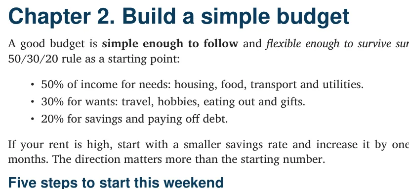
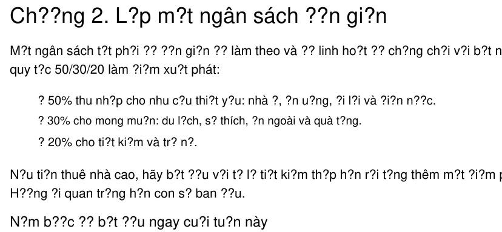
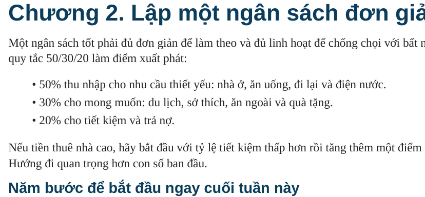

Đo chất lượng · cập nhật 02/11/2026
Một bản dịch PDF tiếng Việt tốt trông như thế nào, đo bằng số
Dịch đúng nghĩa là một chuyện. Bản PDF còn phải hiện đủ dấu, chữ nằm đúng chỗ, vẫn bôi đen và tìm kiếm được, liên kết còn bấm được. Trang này công bố cách đo, kết quả đo và mọi file để bạn kiểm lại.
Nhìn tận mắt
Cùng một bản dịch, hai cách ghép vào PDF
Ba ảnh cắt cùng một vùng của trang 3 trong file mẫu. Bản dịch giống hệt nhau; chỉ khác cách đưa chữ vào trang.



Bộ chấm
Bảy chỉ số, chấm được PDF của bất kỳ công cụ nào
Bộ chấm là mã nguồn mở, nằm trong chính công cụ. Nó không chấm văn dịch hay hay dở; phần đó cần người đọc.
| Chỉ số | Đo gì | Tốt khi |
|---|---|---|
| Ký tự lỗi phông | Ký tự hiện thành ô vuông, dấu hỏi hoặc mất dấu vì phông không có chữ Việt | 0 |
| Tỷ lệ từ có dấu | Phần trăm từ có dấu tiếng Việt trong toàn bộ chữ của bản dịch | Mẫu của dự án đạt 0,85; dưới 0,5 là dấu hiệu mất dấu |
| Từ tiếng Anh còn sót | Từ chức năng tiếng Anh (the, and, of…) còn lại sau khi dịch | Gần 0 |
| Liên kết | Số liên kết còn bấm được so với bản gốc | Bằng nhau |
| Trang mất lớp chữ | Trang bị biến thành ảnh: không bôi đen, không tìm kiếm được | 0 |
| Dòng đè nhau | Cặp dòng chữ chồng lên nhau quá 25% diện tích | 0 |
| Độ trùng bố cục | Chữ dịch có nằm đúng những vùng chữ gốc chiếm hay không (lưới 24 × 32 ô mỗi trang) | Gần 1; luôn đọc cùng hai chỉ số về dấu |
Kết quả đo
pdf-translation-layout 3.1 trên ba tài liệu mẫu
Đối chiếu với cách thay chữ thô dùng cùng bản dịch, cùng vị trí. Bản dịch do tác giả dịch tay, nên các số dưới đây đo phần dựng trang, không đo văn dịch của một mô hình AI cụ thể.
| Tài liệu | Cách ghép chữ | Ký tự lỗi phông | Từ có dấu | Liên kết | Trang mất lớp chữ | Dòng đè nhau | Trùng bố cục |
|---|---|---|---|---|---|---|---|
| 6 trang | pdf-translation-layout 3.1 | 0 | 0,85 | 11/11 | 0 | 0 | 0,87 |
| Thay chữ thô | 384 | 0,22 | 2/11 | 0 | 0 | 0,91 | |
| 60 trang | pdf-translation-layout 3.1 | 0 | 0,85 | 76/76 | 0 | 0 | 0,87 |
| Thay chữ thô | 4.039 | 0,22 | 2/76 | 0 | 0 | 0,90 | |
| 150 trang | pdf-translation-layout 3.1 | 0 | 0,85 | 184/184 | 0 | 0 | 0,87 |
| Thay chữ thô | 10.087 | 0,22 | 2/184 | 0 | 0 | 0,90 |
Cách thay chữ thô có độ trùng bố cục cao hơn một chút vì nó ép chữ vào đúng khung cũ bằng cách thu nhỏ cỡ chữ; pdf-translation-layout cho đoạn dịch giãn sang khoảng trống bên cạnh để giữ cỡ chữ và có thêm dòng chân trang. Phiếu kiểm định của pdf-translation-layout trên cả ba mẫu: Đạt, 0 đoạn tràn khung. Đo ngày 02/11/2026 trên PyMuPDF 2.0 và 1.26, kết quả như nhau.
Giới hạnBộ mẫu do chính tác giả công cụ tạo (tài liệu tự viết, phạm vi công cộng CC0), nên có thiên lệch. Các công cụ dịch tài liệu khác chưa được đo; khi đo sẽ công bố kèm file kết quả gốc để ai cũng kiểm lại được.
Kiểm lại
Tải mọi file đã dùng để đo
- mau_6trang.pdf · bản gốc tiếng Anh, 6 bố cục: bìa, 2 cột, danh sách, bảng, biểu đồ, hộp tô nền
- mau_6trang_VI.pdf · kết quả pdf-translation-layout 3.1
- mau_6trang_duong-co-so.pdf · kết quả cách thay chữ thô
- mau_6trang_phieu-kiem-dinh.md · phiếu kiểm định công cụ tự xuất
- ket_qua_2026-11-02.csv · số liệu đầy đủ cả ba tài liệu
- Mã nguồn, giao thức đo, bản dịch tham chiếu
Tự chấm
Chấm bản dịch từ công cụ bạn đang dùng
Cách nhanh nhất: mở trang chấm trên web, chọn file gốc và file đã dịch (từ bất kỳ công cụ nào). Bảy chỉ số hiện ngay, tài liệu không rời máy bạn.
Hoặc, nếu đã tải kỹ năng lên Claude theo bốn bước, đính kèm cả hai file rồi nhắn:
Câu nhắnĐây là file gốc và bản dịch tiếng Việt, chấm chất lượng bản dịch giúp tôi
Claude trả lờiBảy chỉ số ở trên, kèm giải thích bằng lời thường và những trang nên tự xem lại
Dùng máy tính và quen dòng lệnh: python dich_pdf.py cham-diem --goc goc.pdf --dich ban-dich.pdf --csv ket_qua.csv. Giao thức đo đầy đủ nằm trong thư mục benchmark/ của mã nguồn.